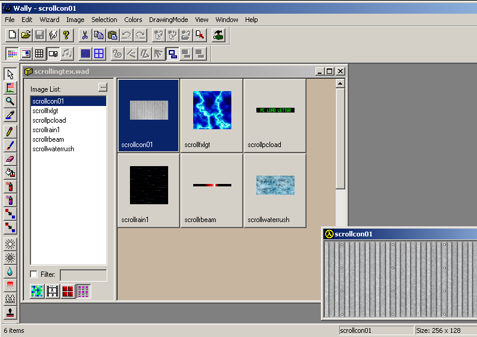
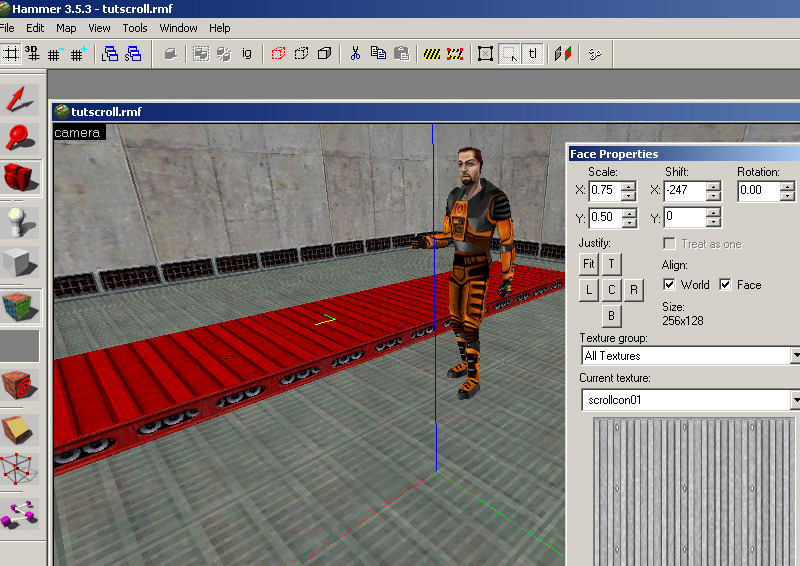
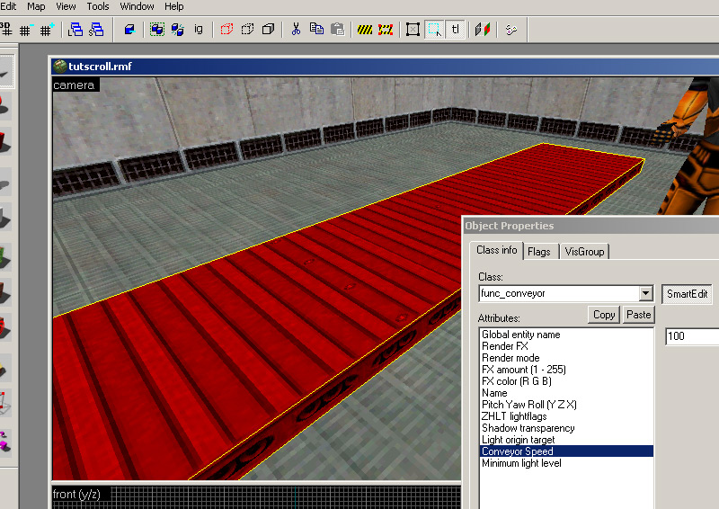
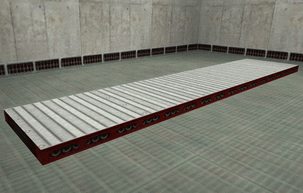
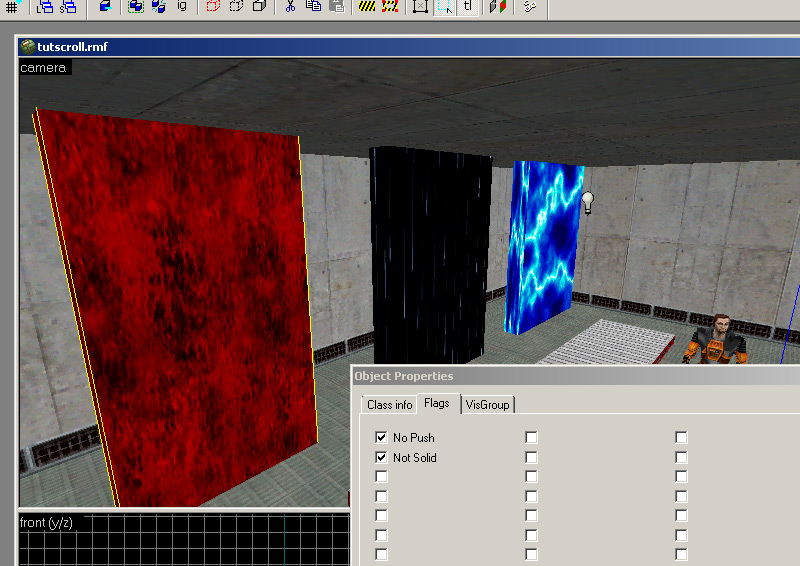
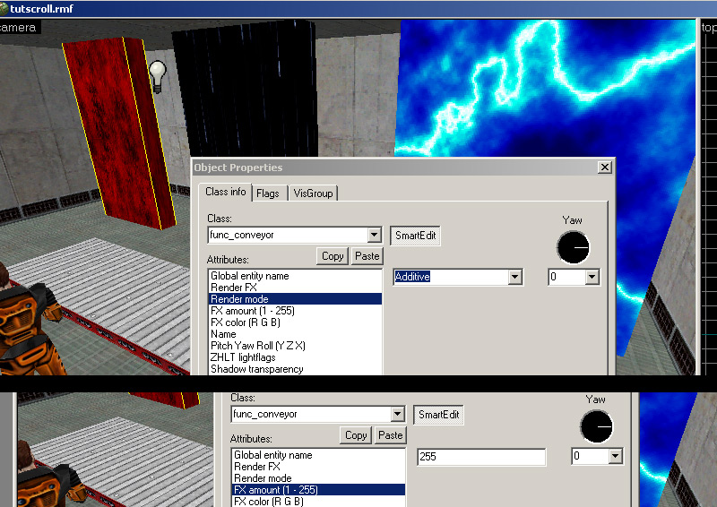
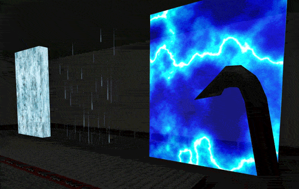

1) Scrolling textures don't require any special image creation other than a simple filename change. The scrolling texture needs to have "scroll" (in lowercase!) in the first part of the filename (but be sure not to exceed the 15-character filename limit). The image scrolls from left to right so keep this in mind during creation and addition of motion blur if needed. Create your texture as you did in Part1. Save the bmp with the scroll name like so.

2) Apply the new scrolling texture to a func_conveyor. Set the world direction of the conveyor movement and then go into the texture edit mode and select your face. Look at the XYZ icon and see that the yellow leg of it is the direction of the texture scroll; it is also important for this direction to match the yaw of the func_conveyor entity for push direction. In the properties you can set the speed.


3) Compile the map and observe:

4) For if you want just an effect without the push, go into the properties and uncheck the "push" flag, and if you want the brush passable uncheck solid:


5) For a rushing water effect, apply a scrolling water texture select the func_conveyor and set the rendermode to additive & FX amount to "255". This can also be used for rain or various scifi effects:

You can use Scrolling textures on other entities other than func_conveyor such as func_pushable, func_wall, etc. Due to an interesting quirk with the GoldSrc engine the scrolling texture speed is stored in the "FX Color" RGB keyvalues and processed at runtime. Until I get a calculator to do this for you here is some common values you can use in the render color fields:
Three numbers are in the FX Color RGB fields: (for fine inbetween values, add to the blue value on the furthest right; note number cannot exceed 255) Forwards Speed 4 = 0 0 64 Speed 8 = 0 0 128 Speed 16 = 0 1 0 Speed 32 = 0 2 0 Speed 64 = 0 4 0 Speed 128 = 0 8 0 Speed 256 = 0 16 0 Speed 512 = 0 32 0 Speed 1024 = 0 64 0 Speed 2048 = 0 128 0 Speed 4080 = 0 255 0 Backwards Speed 4 = 1 0 64 Speed 8 = 1 0 128 Speed 16 = 1 1 0 Speed 32 = 1 2 0 Speed 64 = 1 4 0 Speed 128 = 1 8 0 Speed 256 = 1 16 0 Speed 512 = 1 32 0 Speed 1024 = 1 64 0 Speed 2048 = 1 128 0 Speed 4080 = 1 255 0 |